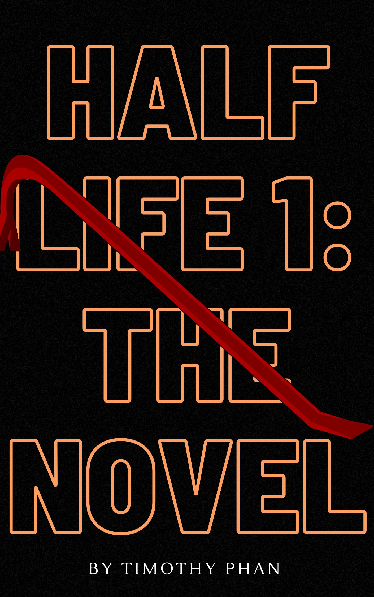

Chapter 1 - Black Mesa Inbound - A normal day?
Our tale lies on a theoretical physicist, Gordon Freeman. Today is one Gordon will never forget.
It starts like a normal day like any other, Gordon gets onto the tram late, the time is 8:47 am, topside temperature is at 93 degrees while the Black Mesa Facility is maintained at 68 degrees. During the tram ride, he gets a view on the facility. After the tram ride, the security guard near the door walks over to the tram door to unlock the door.
“Morning Mr. Freeman, looks like you're running late.” reminds the guard. Freeman steps out and follows with the guard to the airlock door. The guard enters a code on a keypad close to the door and the airlock door opens. Freeman steps in and the airlock door begins to close.
Chapter 2 - Anomalous Materials - The experiment.
The second door opens and Freeman goes through, entering the lobby. The guard at the desk tells Freeman "Hey Mr. Freeman, I had a bunch of messages for you but we had a system crash about 20 minutes ago and I'm still trying to find my files. Just one of those days I guess. They were having some problems down in the test chamber too, but I think that's all straightened out." The desk guard’s computer appears to still be on a blue screen. Freeman acknowledges the message and proceeds to the locker room. On the way he goes to a break room and spots a microwave with a casserole. Freeman, being the man he is, heats up the microwave and blows up the casserole. Freeman went back out and went to the locker room.